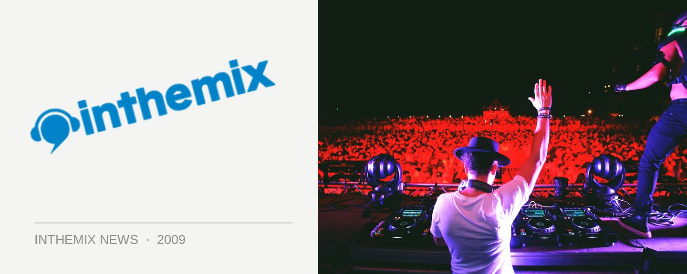

Wannabe Tasmanian drug dealer's epic fail with blue M&M's shipment
If ever there was an ‘epic fail’ of attempted big-time drug deals, then this is it. When 21-year old Dwayne Grant Seabourne admitted to police upon return to Tasmania last year that he’d flown back from Melbourne with $6000 worth of ecstasy in his luggage, little did he know that the Melbourne underworld had duped him with something else entirely – a shipment of 400 delicious blue M&M’s, to be precise.
“He returned to Launceston with what he believed were ecstasy tablets,” Crown prosecutor Jackie Hartnett told the Burnie Supreme Court last month. “He purchased 400 tablets for $15 each…intending to sell them for $30 each.”
However, The Advocate reports that when being interviewed by police, Seabourne didn’t express the relief that you’d expect when it became clear he’d been spared a lifetime behind bars. Instead, his response was instead much closer to anger – that those wily underworld crims had done him over! “He felt someone had essentially ripped him off,” Hartnett told the court. Dastardly underworld villains that they are.
While the state has yet to pass any laws banning the trafficking of blue M&M’s (as deliciously addictive as they may be), the prosecution argued that Seabourne should be sentenced on the “basis of the evil intended, not on the basis of the evil that could have been accomplished”.
Arguing in Seabourne’s defence, counsel Katie Edwards claimed that any harm that could have come from his “particularly unsophisticated attempt” to deal drugs was effectively nil.
ITM reckons that Seabourne got owned. Not just by the Melbourne underworld, but by his own defence lawyer too! Let us know what you think in the comments below.